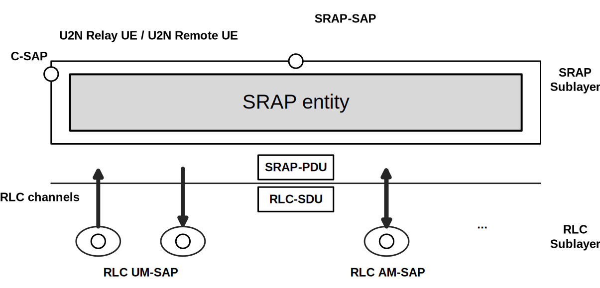
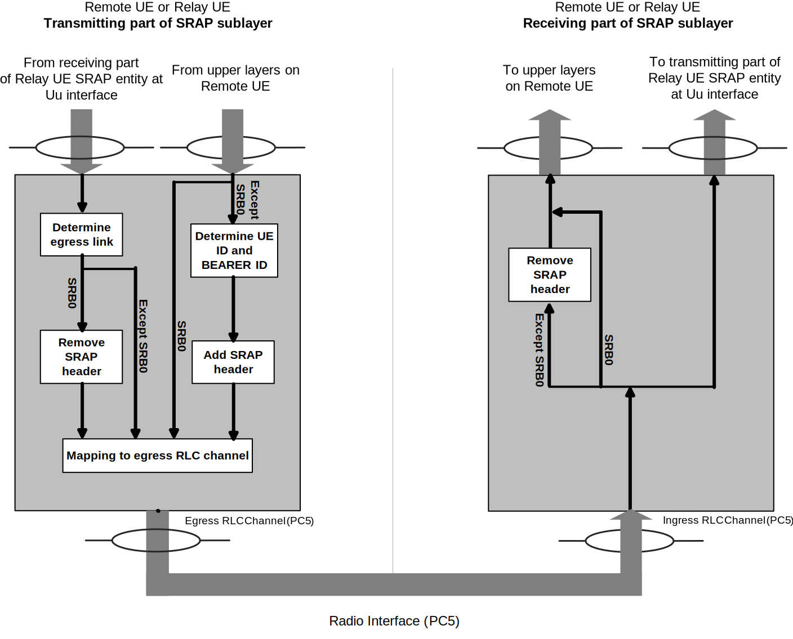
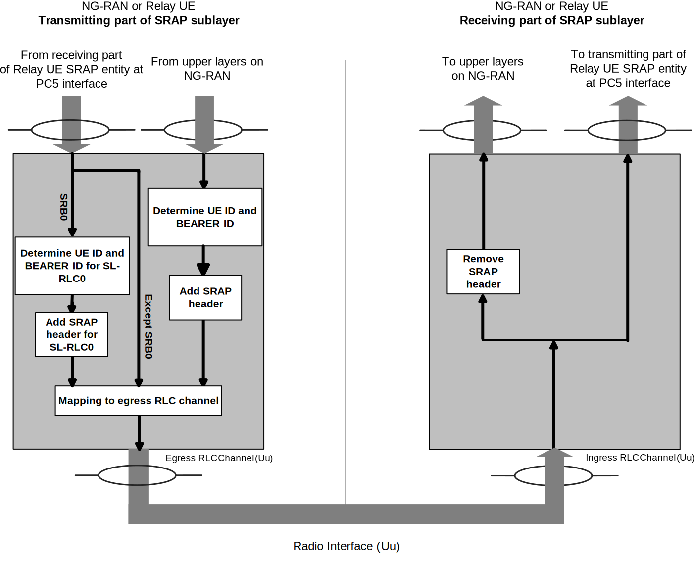
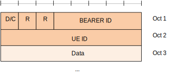
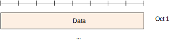

| 3GPP TS 38.351 V17.8.0 (2025-06) | |
|---|---|
| Technical Specification | |
3rd Generation Partnership Project; Technical Specification Group Radio Access Network; NR; Sidelink Relay Adaptation Protocol (SRAP) Specification (Release 17) |
|
| The present document has been developed within the 3rd
Generation Partnership Project (3GPP TM) and may be further
elaborated for the purposes of 3GPP. The present document has not been subject to any approval process by the 3GPP Organizational Partners and shall not be implemented. This Specification is provided for future development work within 3GPP only. The Organizational Partners accept no liability for any use of this Specification. Specifications and Reports for implementation of the 3GPP TM system should be obtained via the 3GPP Organizational Partners' Publications Offices. |
|
|
Copyright Notification No part may be reproduced except as authorized by written
permission. © 2025, 3GPP Organizational Partners (ARIB, ATIS, CCSA, ETSI, TSDSI, TTA, TTC). All rights reserved. UMTS™ is a Trade Mark of ETSI registered for the benefit of its members 3GPP™ is a Trade Mark of ETSI registered for the benefit of its
Members and of the 3GPP Organizational Partners GSM® and the GSM logo are registered and owned by the GSM Association |
Foreword 4
1 Scope 6
2 References 6
3 Definitions of terms, symbols and abbreviations 6
3.1 Terms 6
3.2 Abbreviations 6
4 General 7
4.1 Introduction 7
4.2 SRAP architecture 7
4.2.1 General 7
4.2.2 SRAP entities 7
4.3 Services 10
4.3.1 Services provided to upper layers 10
4.3.2 Services expected from lower layers 10
4.4 Functions 10
4.5 Configurations 10
5 Procedures 10
5.1 SRAP entity handling 10
5.1.1 SRAP entity establishment 10
5.1.2 SRAP entity release 11
5.2 DL Data transfer 11
5.2.1 Receiving operation of U2N Relay UE 11
5.2.2 Transmitting operation of U2N Relay UE 11
5.2.2.0 General 11
5.2.2.1 Egress link determination 11
5.2.2.2 Egress RLC channel determination 11
5.2.3 Receiving operation of U2N Remote UE 12
5.3 UL Data transfer 12
5.3.1 Transmitting operation of U2N Remote UE 12
5.3.1.1 UE ID field and BEARER ID field determination 13
5.3.1.2 Egress RLC channel determination 13
5.3.2 Receiving operation of U2N Relay UE 13
5.3.3 Transmitting operation of U2N Relay UE 13
5.3.3.1 UE ID field and BEARER ID field determination 14
5.3.3.2 Egress RLC channel determination 14
5.4 Handling of unknown, unforeseen, and erroneous protocol data 14
6 Protocol data units, formats, and parameters 15
6.1 Protocol data units 15
6.1.1 Data PDU 15
6.2 Formats 15
6.2.1 General 15
6.2.2 Data PDU 15
6.3 Parameters 16
6.3.1 General 16
6.3.2 UE ID 16
6.3.3 BEARER ID 16
6.3.4 Data 16
6.3.5 R 16
6.3.6 D/C 16
Annex A (informative): Change history 17
This Technical Specification has been produced by the 3rd Generation Partnership Project (3GPP).
The contents of the present document are subject to continuing work within the TSG and may change following formal TSG approval. Should the TSG modify the contents of the present document, it will be re-released by the TSG with an identifying change of release date and an increase in version number as follows:
Version x.y.z
where:
x the first digit:
1 presented to TSG for information;
2 presented to TSG for approval;
3 or greater indicates TSG approved document under change control.
y the second digit is incremented for all changes of substance, i.e. technical enhancements, corrections, updates, etc.
z the third digit is incremented when editorial only changes have been incorporated in the document.
In the present document, modal verbs have the following meanings:
shall indicates a mandatory requirement to do something
shall not indicates an interdiction (prohibition) to do something
The constructions "shall" and "shall not" are confined to the context of normative provisions, and do not appear in Technical Reports.
The constructions "must" and "must not" are not used as substitutes for "shall" and "shall not". Their use is avoided insofar as possible, and they are not used in a normative context except in a direct citation from an external, referenced, non-3GPP document, or so as to maintain continuity of style when extending or modifying the provisions of such a referenced document.
should indicates a recommendation to do something
should not indicates a recommendation not to do something
may indicates permission to do something
need not indicates permission not to do something
The construction "may not" is ambiguous and is not used in normative elements. The unambiguous constructions "might not" or "shall not" are used instead, depending upon the meaning intended.
can indicates that something is possible
cannot indicates that something is impossible
The constructions "can" and "cannot" are not substitutes for "may" and "need not".
will indicates that something is certain or expected to happen as a result of action taken by an agency the behaviour of which is outside the scope of the present document
will not indicates that something is certain or expected not to happen as a result of action taken by an agency the behaviour of which is outside the scope of the present document
might indicates a likelihood that something will happen as a result of action taken by some agency the behaviour of which is outside the scope of the present document
might not indicates a likelihood that something will not happen as a result of action taken by some agency the behaviour of which is outside the scope of the present document
In addition:
is (or any other verb in the indicative mood) indicates a statement of fact
is not (or any other negative verb in the indicative mood) indicates a statement of fact
The constructions "is" and "is not" do not indicate requirements.
The present document provides description of the Sidelink Relay Adaptation Protocol (SRAP).
The following documents contain provisions which, through reference in this text, constitute provisions of the present document.
- References are either specific (identified by date of publication, edition number, version number, etc.) or non‑specific.
- For a specific reference, subsequent revisions do not apply.
- For a non-specific reference, the latest version applies. In the case of a reference to a 3GPP document (including a GSM document), a non-specific reference implicitly refers to the latest version of that document in the same Release as the present document.
[1] 3GPP TR 21.905: "Vocabulary for 3GPP Specifications".
[2] 3GPP TS 38.300: "NG Radio Access Network; Overall description".
[3] 3GPP TS 38.331: "NR Radio Resource Control (RRC); Protocol Specification".
[4] 3GPP TS 38.322: "NR Radio Link Control (RLC) protocol specification".
[5] 3GPP TS 38.323: "NR; Packet Data Convergence Protocol (PDCP) specification".
For the purposes of the present document, the terms given in TR 21.905 [1] and the following apply. A term defined in the present document takes precedence over the definition of the same term, if any, in TR 21.905 [1].
Egress RLC channel: a RLC channel on which a packet is transmitted by a U2N Relay UE, a U2N Remote UE or a network node.
Egress link: a radio link on which a packet is transmitted by a U2N Relay UE, a U2N Remote UE or a network node.
Ingress RLC channel: a RLC channel on which a packet is received from a U2N Relay UE, a U2N Remote UE or a network node.
Ingress link: a radio link on which a packet is received from a U2N Relay UE, a U2N Remote UE or a network node.
U2N Relay UE: a UE that provides functionality to support connectivity to the network for U2N Remote UE(s).
U2N Remote UE: a UE that communicates with the network via a U2N Relay UE.
For the purposes of the present document, the abbreviations given in TR 21.905 [1] and the following apply. An abbreviation defined in the present document takes precedence over the definition of the same abbreviation, if any, in TR 21.905 [1].
SRAP Sidelink Relay Adaptation Protocol
U2N UE-to-Network
The objective is to describe the SRAP architecture and the SRAP entities from a functional point of view.
This clause describes a model of the SRAP, i.e., it does not specify or restrict implementations.
Figure 4.2.2-1 represents one possible structure for the SRAP sublayer. The figure is based on the radio interface protocol architecture defined in TS 38.300 [2].

Figure 4.2.2-1: SRAP structure overview
On the U2N Relay UE, the SRAP sublayer contains one SRAP entity at Uu interface and a separate collocated SRAP entity at the PC5 interface. On the U2N Remote UE, the SRAP sublayer contains only one SRAP entity at the PC5 interface.
Each SRAP entity has a transmitting part and a receiving part. Across the PC5 interface, the transmitting part of the SRAP entity at the U2N Remote UE has a corresponding receiving part of an SRAP entity at the U2N Relay UE, and vice versa. Across the Uu interface, the transmitting part of the SRAP entity at the U2N Relay UE has a corresponding receiving part of an SRAP entity at the gNB, and vice versa.
Figure 4.2.2-2 and Figure 4.2.2-3 represents the functional view of the SRAP entity for the SRAP sublayer at PC5 interface and at Uu interface respectively.

Figure 4.2.2-2: Example of functional view of SRAP sublayer at PC5 interface

Figure 4.2.2-3: Example of functional view of SRAP sublayer at Uu interface
In the example of Figure 4.2.2-2 and Figure 4.2.2-3, at relay UE:
- For data packet not corresponding to SRB0, the receiving part on the SRAP entity of Uu interface delivers SRAP Data PDUs to the transmitting part on the collocated SRAP entity of PC5 interface, and the receiving part on the SRAP entity of PC5 interface delivers SRAP Data PDUs to the transmitting part on the collocated SRAP entity of Uu interface. As an alternative, the receiving part may deliver SRAP SDUs to the transmitting part on the collocated SRAP entity. When passing SRAP SDUs, the receiving part removes the SRAP header and the transmitting part of the relay UE adds the SRAP header with the same SRAP header content as carried on the SRAP Data PDU header prior to removal. Passing SRAP SDUs in this manner is therefore functionally equivalent to passing SRAP Data PDUs, in implementation. The following specification therefore refers to the passing of SRAP data packets.
- For UL data packet corresponding to SRB0, the receiving part on the SRAP entity of PC5 interface delivers SRAP SDUs to the transmitting part on the collocated SRAP entity of Uu interface, and the transmitting part on the SRAP entity of Uu interface adds the SRAP header in accordance with clause 5.3.3.
- For DL data packet corresponding to SRB0, the receiving part on the SRAP entity of Uu interface delivers SRAP Data PDUs to the transmitting part on the collocated SRAP entity of PC5 interface, and the transmitting part on the SRAP entity of PC5 interface removes the SRAP header in accordance with clause 5.2.2. As an alternative for handling DL data packet corresponding to SRB0 not shown in Figure 4.2.2-2 or Figure 4.2.2-3, the receiving part on the SRAP entity of Uu interface removes the SRAP header and delivers SRAP SDUs to the transmitting part on the collocated SRAP entity of PC5 interface.
The following services are provided by the SRAP sublayer to upper layers:
- Data transfer.
An SRAP sublayer expects the following services from lower layers per RLC entity (for a detailed description see TS 38.322 [4]):
- Acknowledged data transfer service;
- Unacknowledged data transfer service.
The SRAP sublayer supports the following functions:
- Data transfer;
- Determination of UE ID field and BEARER ID field for data packets;
- Determination of egress link;
- Determination of egress RLC channel.
The configuration of the SRAP entity for U2N Remote UE includes:
- Mapping from a radio bearer identified by BEARER ID field to egress PC5 Relay RLC channel via RRC;
- The local identity via RRC.
The configuration of the SRAP entity for U2N Relay UE includes:
- The local identity for each U2N Remote UE via RRC;
- Mapping from a radio bearer identified by UE ID field and BEARER ID field to egress Uu Relay RLC channel for each U2N Remote UE via RRC;
- Mapping from a radio bearer identified by UE ID field and BEARER ID field to egress PC5 Relay RLC channel for each U2N Remote UE via RRC.
When upper layers request establishment of an SRAP entity, UE shall:
- Establish an SRAP entity;
- Follow the procedures in clause 5.
When upper layers request release of an SRAP entity, UE shall:
- Release the SRAP entity and the related SRAP configurations.
Upon receiving an SRAP Data PDU from lower layer, the receiving part of the SRAP entity on the Uu interface of U2N Relay UE shall:
- Deliver the SRAP data packet to the transmitting part of the collocated SRAP entity on the PC5 interface.
The transmitting part of the SRAP entity on the PC5 interface of U2N Relay UE receives SRAP data packets from the receiving part of the SRAP entity on the Uu interface of the same U2N Relay UE, and construct SRAP Data PDUs as needed (see clause 4.2.2).
When the transmitting part of the SRAP entity on the PC5 interface has an SRAP Data PDU to transmit, the transmitting part of the SRAP entity on the PC5 interface shall:
- Determine the egress link in accordance with clause 5.2.2.1;
- Determine the egress RLC channel in accordance with clause 5.2.2.2;
- If the SRAP Data PDU is for SRB0 (the BEARER ID field is 0, and the bearer is identified as SRB based on sl-RemoteUE-RB-Identity associated with the entry containing the sl-EgressRLC-ChannelUu which matches the LCID of the Uu Relay RLC Channel from which the SRAP Data PDU is received):
- Remove the SRAP header from the SRAP Data PDU;
- Submit this SRAP Data PDU to the determined egress RLC channel of the determined egress link.
For a SRAP Data PDU to be transmitted, SRAP entity shall:
- If there is an entry in sl-RemoteUE-ToAddModList, whose sl-LocalIdentity included in sl-SRAP-ConfigRelay matches the UE ID field in SRAP Data PDU:
- Determine the egress link on PC5 interface corresponding to sl-L2IdentityRemote configured for the concerned sl-LocalIdentity as specified in TS 38.331 [3].
For a SRAP Data PDU to be transmitted, the SRAP entity shall:
- If the SRAP Data PDU is for SRB0 (the BEARER ID field is 0 and the bearer is identified as SRB based on sl-RemoteUE-RB-Identity associated with the entry containing the sl-EgressRLC-ChannelUu which matches the LCID of the Uu Relay RLC Channel from which the SRAP Data PDU is received):
- Determine the egress PC5 Relay RLC channel in the determined egress link corresponding to logicalChannelIdentity for SL-RLC0 as specified in TS 38.331 [3].
- Else if there is an entry in sl-RemoteUE-ToAddModList, whose sl-LocalIdentity included in sl-SRAP-ConfigRelay matches the UE ID field in SRAP Data PDU, which includes an sl-RemoteUE-RB-Identity that matches the SRB identity or DRB identity of the SRAP Data PDU determined by the BEARER ID field (For the BEARER ID shared by both SRB and DRB, SRB and DRB are differentiated based on sl-RemoteUE-RB-Identity associated with the entry containing the sl-EgressRLC-ChannelUu which matches the LCID of the Uu Relay RLC Channel from which the SRAP Data PDU is received, and for DRB, the DRB identity is BEARER ID plus 1):
- If the SRAP Data PDU is for SRB1 but the corresponding sl-EgressRLC-ChannelPC5 is absent in sl-SRAP-ConfigRelay:
- Determine the egress PC5 Relay RLC channel in the determined egress link corresponding to logicalChannelIdentity for SL-RLC1 as specified in TS 38.331 [3].
- Else:
- Determine the egress PC5 Relay RLC channel in the determined egress link corresponding to sl-EgressRLC-ChannelPC5 configured for the concerned sl-LocalIdentity and concerned sl-RemoteUE-RB-Identity as specified in TS 38.331 [3].
Upon receiving an SRAP Data PDU from lower layer, the receiving part of the SRAP entity shall:
- If the SRAP Data PDU is not for SRB0 (not received from SL-RLC0 as specified in TS 38.331 [3]):
- If the SRAP Data PDU is received from SL-RLC1 as specified in TS 38.331 [3]:
- Remove the SRAP header of this SRAP Data PDU and deliver the SRAP SDU to PDCP entity of SRB1 by ignoring the UE ID field and BEARER ID field of this SRAP Data PDU;
- Else:
- Remove the SRAP header of this SRAP Data PDU and deliver the SRAP SDU to upper layer entity corresponding to the BEARER ID field of this SRAP Data PDU (For the BEARER ID shared by both SRB and DRB, SRB and DRB are differentiated based on sl-RemoteUE-RB-Identity associated with the entry containing the sl-EgressRLC-ChannelPC5 which matches LCID of the PC5 Relay RLC Channel from which the SRAP Data PDU is received, and for DRB, the DRB identity is BEARER ID plus 1);
- Else:
- Deliver the SRAP SDU (i.e., same as SRAP PDU for SRB0) to upper layer, i.e., RRC layer entity (TS 38.331 [3]).
The transmitting part of the SRAP entity on the PC5 interface of U2N Remote UE can receive SRAP SDU from upper layer and constructs SRAP Data PDU.
Upon receiving an SRAP SDU from upper layer, the transmitting part of the SRAP entity on the PC5 interface shall:
- If the SRAP SDU is not for SRB0:
- Determine the UE ID field and BEARER ID field in accordance with clause 5.3.1.1;
- Construct an SRAP Data PDU with SRAP header, where the UE ID field and BEARER ID field are set to the determined values, in accordance with clause 6.2.2;
- Else:
- Construct an SRAP Data PDU without SRAP header in accordance with clause 6.2.2.
- Determine the egress RLC channel in accordance with clause 5.3.1.2;
- Submit this SRAP Data PDU to the determined egress RLC channel.
For an SRAP SDU received from upper layer, the SRAP entity shall:
- Determine the UE ID field corresponding to sl-LocalIdentity, configured as specified in TS 38.331 [3];
- Determine the BEARER ID field corresponding to SRB identity for SRB (i.e., set the BEARER ID field to srb-Identity), or corresponding to DRB identity minus 1 for DRB (i.e., set the BEARER ID field to drb-Identity minus 1), from which the SRAP SDU is received, configured as specified in TS 38.331 [3].
For a SRAP Data PDU to be transmitted, the SRAP entity shall:
- If the SRAP Data PDU is for SRB0:
- Determine the egress PC5 Relay RLC channel in the link with U2N Relay UE corresponding to logicalChannelIdentity for SL-RLC0 as specified in TS 38.331 [3].
- Else if the SRAP Data PDU is for SRB1 and if there is not an entry in sl-MappingToAddModList, whose sl-RemoteUE-RB-Identity matches the SRB identity of the SRAP Data PDU, or if there is an entry in sl-MappingToAddModList without the corresponding sl-EgressRLC-ChannelPC5:
- Determine the egress PC5 Relay RLC channel in the link with U2N Relay UE corresponding to logicalChannelIdentity for SL-RLC1 as specified in TS 38.331 [3].
- Else if there is an entry in sl-MappingToAddModList, whose sl-RemoteUE-RB-Identity matches the SRB identity or DRB identity of the SRAP Data PDU:
- Determine the egress PC5 Relay RLC channel of the link with U2N Relay UE corresponding to sl-EgressRLC-ChannelPC5 configured for the concerned sl-RemoteUE-RB-Identity as specified in TS 38.331 [3].
Upon receiving an SRAP Data PDU from lower layer, the receiving part of the SRAP entity on the PC5 interface shall:
- Deliver the SRAP data packet to the transmitting part of the collocated SRAP entity on the Uu interface.
The transmitting part of the SRAP entity on the Uu interface of U2N Relay UE can receive SRAP data packets from the receiving part of the SRAP entity on the PC5 interface of the same U2N Relay UE, and construct SRAP Data PDUs as needed (see clause 4.2.2).
When the transmitting part of the SRAP entity on the Uu interface has an SRAP Data PDU to transmit, the transmitting part of the SRAP entity on the Uu interface shall:
- If the SRAP Data PDU is received from SL-RLC0 as specified in TS 38.331 [3]:
- Determine the UE ID field and BEARER ID field in accordance with clause 5.3.3.1;
- Construct an SRAP Data PDU with SRAP header, where the UE ID field and BEARER ID field are set to the determined values, in accordance with clause 6.2.2;
- Determine the egress RLC channel in accordance with clause 5.3.3.2;
- Submit this SRAP Data PDU to the determined egress RLC channel.
For an SRAP Data PDU received from SL-RLC0 as specified in TS 38.331 [3], the SRAP entity shall:
- If there is an entry in sl-RemoteUE-ToAddModList, whose sl-L2IdentityRemote matches the Layer-2 ID of the remote UE from which the SRAP Data PDU is received:
- Determine the UE ID field corresponding to sl-LocalIdentity configured for the concerned sl-L2IdentityRemote as specified in TS 38.331 [3];
- Determine the BEARER ID field as 0 (i.e., set BEARER ID field as 0).
For a SRAP Data PDU to be transmitted, the SRAP entity shall:
- If there is an entry in sl-RemoteUE-ToAddModList, whose sl-LocalIdentity included in sl-SRAP-ConfigRelay matches the UE ID field in SRAP Data PDU:
- If the SRAP Data PDU is for SRB0:
- Determine the egress Uu Relay RLC channel corresponding to sl-EgressRLC-ChannelUu configured for SRB0 for the concerned sl-LocalIdentity as specified in TS 38.331 [3].
- Else if the SRAP Data PDU is received from SL-RLC1 as specified in TS 38.331 [3]:
- Determine the egress Uu Relay RLC channel corresponding to sl-EgressRLC-ChannelUu configured for SRB1 for the concerned sl-LocalIdentity as specified in TS 38.331 [3].
- Else if there is an entry in sl-RemoteUE-ToAddModList which includes an sl-RemoteUE-RB-Identity matches SRB identity or DRB identity of the SRAP Data PDU determined by the BEARER ID field (For the BEARER ID shared by both SRB and DRB, SRB and DRB are differentiated based on sl-RemoteUE-RB-Identity associated with the entry containing the sl-EgressRLC-ChannelPC5 which matches LCID of the PC5 Relay RLC Channel from which the SRAP Data PDU is received, and for DRB, the DRB identity is BEARER ID plus 1):
- Determine the egress Uu Relay RLC channel corresponding to sl-EgressRLC-ChannelUu configured for the concerned sl-LocalIdentity and concerned sl-RemoteUE-RB-Identity as specified in TS 38.331 [3].
For U2N Remote UE, if sl-LocalIdentity and sl-RemoteUE-RB-Identity are both configured, when a SRAP Data PDU with SRAP header that contains a UE ID field or BEARER ID field which does not match sl-LocalIdentity or sl-RemoteUE-RB-Identity included in sl-SRAP-ConfigRemote is received, the SRAP entity shall:
- Discard the received SRAP Data PDU.
For U2N Relay UE, when a SRAP Data PDU with SRAP header that contains a UE ID field or BEARER ID field which does not match sl-LocalIdentity or sl-RemoteUE-RB-Identity included in sl-SRAP-ConfigRelay is received except in the case where the SRAP Data PDU from SL-RLC1 as specified in TS 38.331 [3] is the first SRAP Data PDU received from a U2N Remote UE, or when a SRAP Data PDU that contains a UE ID which does not match the concerned sl-LocalIdentity corresponding to sl-L2IdentityRemote of the ingress link is received by U2N Relay UE, the SRAP entity shall:
- Discard the received SRAP Data PDU.
When the U2N Remote UE or the U2N Relay UE receives a SRAP PDU with invalid or reserved values, the SRAP entity shall:
- Discard the received SRAP PDU.
The SRAP Data PDU is used to convey the following with or without the PDU header:
- Upper layer data.
An SRAP Data PDU is a bit string that is byte aligned (i.e. multiple of 8 bits) in length. The formats of SRAP Data PDUs are described in clause 6.2.2 and their parameters are described in clause 6.3.
Figure 6.2.2-1 shows the format of the SRAP Data PDU with SRAP header being configured. This SRAP Data PDU format is applicable to SRAP SDU except those for SRB0 delivered over PC5 interface.

Figure 6.2.2-1: SRAP Data PDU format with SRAP header
Figure 6.2.2-2 shows the format of the SRAP Data PDU consisting only of a data field without any SRAP header. This SRAP Data PDU format is applicable to SRAP SDU for SRB0 delivered over PC5 interface.

Figure 6.2.2-2: SRAP Data PDU format without SRAP header
If not otherwise mentioned in the definition of each field the bits in the parameters shall be interpreted as follows: the left most bit is the first and most significant and the right most bit is the last and least significant bit.
Unless otherwise mentioned, integers are encoded in standard binary encoding for unsigned integers. In all cases the bits appear ordered from MSB to LSB when read in the PDU.
Length: 8 bits.
This field carries local identity of U2N Remote UE.
Length: 5 bits.
This field carries information to identify Uu radio bearer for U2N Remote UE. For SRBs, the value is set to SRB Identity (which is configured by RRC parameter srb-Identity). For DRBs, the value is set to DRB Identity (which is configured by RRC parameter drb-Identity) minus 1.
Length: Variable
This field carries the SRAP SDU (i.e. PDCP PDU or RRC PDU).
Length: 1 bit
Reserved. In this release, reserved bits shall be set to 0. Reserved bits shall be ignored by the receiver.
Length: 1 bit
This field indicates whether the corresponding SRAP PDU is an SRAP Data PDU or an SRAP Control PDU (not used in this release).
Table 6.3.6-1: D/C field
| Bit | Description |
| 0 | SRAP Data PDU |
| 1 | SRAP Control PDU (not used in this release) |
Annex A (informative):
Change history
| Change history | |||||||
| Date | Meeting | TDoc | CR | Rev | Cat | Subject/Comment | New version |
| 11/2021 | RAN2#116 | R2-2109400 | Skeleton | 0.0.0 | |||
| 11/2021 | RAN2#116 | R2-2111485 | Skeleton update | 0.0.1 | |||
| 11/2021 | RAN2#116 | R2-2111489 | Capture the agreement till R2#116 | 0.1.0 | |||
| 01/2022 | RAN2#116bis | R2-2200364 | Capture the agreement till R2#116 that related to the 38.331 running CR | 0.2.0 | |||
| 01/2022 | RAN2#116bis | R2-2201996 | Capture the agreement during R2#116bis | 0.3.0 | |||
| 02/2022 | RAN2#117 | R2-2202276 | Capture the agreement till R2#116bis that related to the 38.331 running CR | 0.4.0 | |||
| 02/2022 | RAN2#117 | R2-2203594 | Capture the agreement during R2#117 | 0.5.0 | |||
| 03/2022 | RAN#95 | RP-220794 | Submit to RAN for approval | 1.0.0 | |||
| 03/2022 | RP-95 | Upgraded to Rel-17 by MCC | 17.0.0 | ||||
| 06/2022 | RP-96 | RP-221732 | 0001 | 1 | F | Correction on SRAP for L2 UE-to-Network Relay | 17.1.0 |
| 09/2022 | RP-97 | RP-222524 | 0009 | 2 | F | Correction on SRAP for L2 U2N Relay | 17.2.0 |
| 12/2022 | RP-98 | RP-223412 | 0012 | 2 | F | Corrections for L2 U2N Relay | 17.3.0 |
| 03/2023 | RP-99 | RP-230692 | 0015 | 1 | F | Corrections on SRAP for SL relay | 17.4.0 |
| RP-99 | RP-230692 | 0016 | 1 | F | Correction to error handling in SRAP | 17.4.0 | |
| RP-99 | RP-230692 | 0017 | 2 | F | Correction on SRAP for L2 U2N Relay | 17.4.0 | |
| RP-99 | RP-230692 | 0018 | - | F | 38.351 SRAP corrections | 17.4.0 | |
| 06/2023 | RP-100 | RP-231416 | 0020 | 3 | F | Corrections on SRAP for SL relay | 17.5.0 |
| RP-100 | RP-231416 | 0021 | 1 | F | Corrections on SRAP for SL relay | 17.5.0 | |
| RP-100 | RP-231416 | 0022 | 1 | F | Clarification on the SRAP configuration used in SRAP | 17.5.0 | |
| 09/2023 | RP-101 | RP-232667 | 0023 | - | F | Correction of IE name sl-SRAP-ConfigRemote | 17.6.0 |
| RP-101 | RP-232667 | 0024 | 2 | F | Correction on SRAP for sidelink relay | 17.6.0 | |
| RP-101 | RP-232667 | 0025 | 1 | F | Clarification on the BEARER ID in SRAP data PDU | 17.6.0 | |
| 03/2024 | RP-103 | RP-240657 | 0031 | 2 | D | Miscellaneous corrections for NR sidelink relay enhancements | 17.7.0 |
| 06/2025 | RP-108 | RP-251693 | 0038 | 1 | F | Correction of egress Uu RLC channel determination for L2 U2N Relay UE | 17.8.0 |